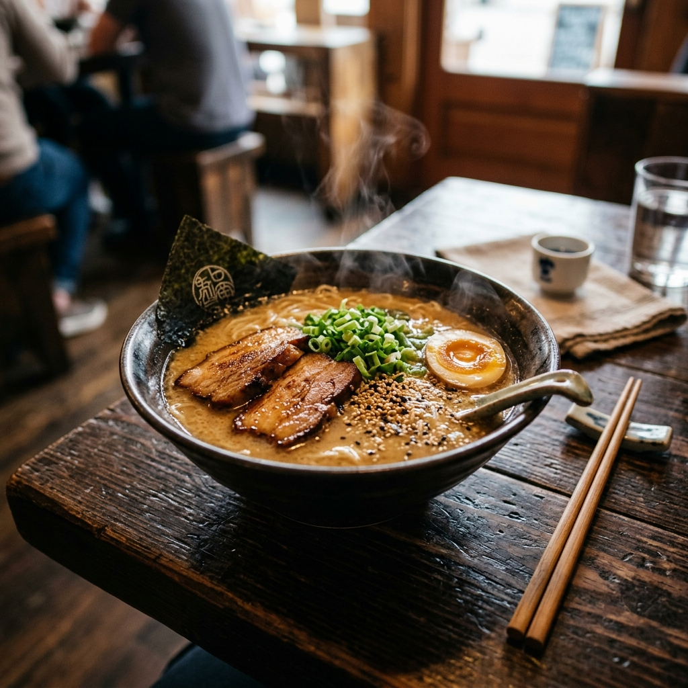

Ingredients
Nutrition Per Serving
Step-by-Step Instructions
Chef's Pro Tip:
Don't overcook noodles! Drain them 30 seconds before target time as they will continue softening in hot broth.
Explore authentic Asian street food & fusion noodle dishes. Step-by-step interactive cooking mode, real-time ingredient scaling, and precision kitchen timers.

Filter by origin, dietary preferences, spice tolerance, or quick prep time